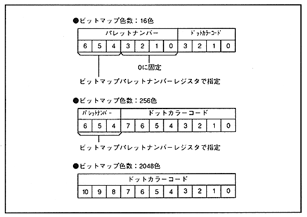

Bitmap palette number is 3-bit data specified by the bitmap palette number register, and specifies the top address of the palette used for the bitmap pattern. Bitmap palette numbers are used only when the color format is the palette format, not when the RGB format is used. Since the palette number is added to the dot color code of the bitmap pattern to form an 11-bit dot color code, the number of bits used varies depending on the number of colors per side. Figure 4.18 shows the dot color data based on the number of bitmap colors.
Figure 4.18 Dot color data based on the number of bitmap colors
